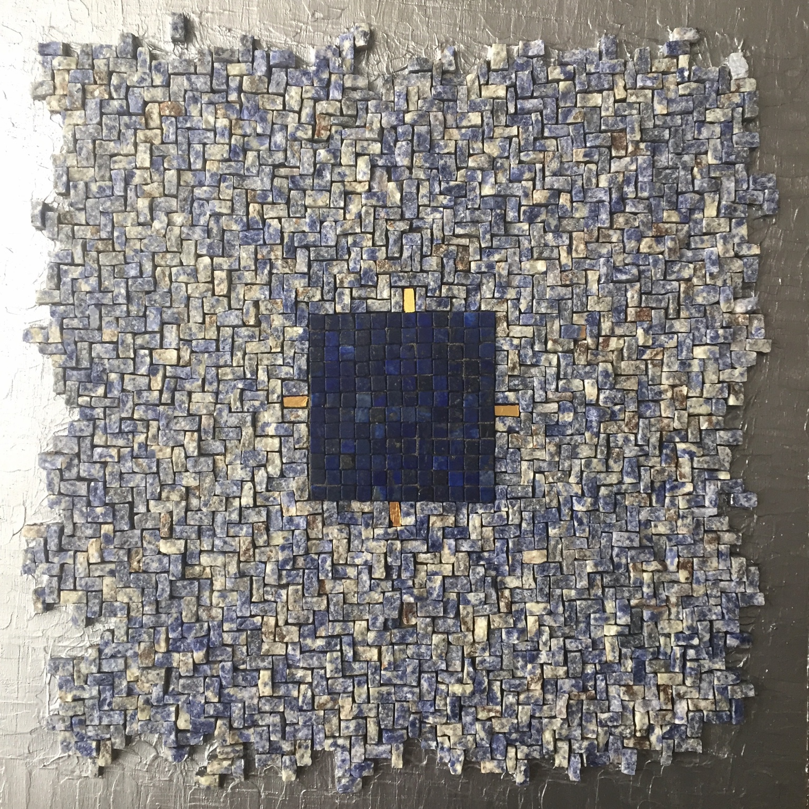

Marcello Mantino - Mosaici Contemporanei
Un viaggio nei 4 elementi attraverso la materia, la luce e l'intuizione.
Aria, Acqua, Terra, Fuoco. Amore, Passione, Felicità, Morte.
Fuoco – Passione

Il fuoco è l'elemento primordiale della passione, dell'energia e della trasformazione...
Aria – Felicità

L’Aria è leggerezza e movimento, respiro e pensiero...
Acqua – Amore
L’acqua è l’elemento del sentimento, dell’introspezione e della memoria...
Terra – Morte

La terra è materia, radice, silenzio e trasformazione...